A harmonium sitting on a patterned rug in an ornate room slowly comes apart. The wood breaks into chunks and dust,
and the music it used to make spills out as glowing gold notes and glitter. I wanted the moment to feel like the
instrument is playing its last song as it disappears, and I wanted it to look real rather than CG.
The effect is built in Houdini 22: the harmonium is fractured and driven apart with particles, and the notes, dust and
glitter are separate particle systems so each could be timed and shaded on its own. The glitter is real bead geometry
so it catches light properly. I rendered the beauty and its passes in Redshift through Solaris, rendered depth and
ID mattes in Karma, and put it all together in Nuke with depth haze, glow from the notes lighting the air, bloom,
film halation, grain and a light vignette.
A matte painting of a cave shrine lit only by oil lamps and a crescent moon. The work is built in depth layers, from the wet foreground rock through the seated cow and the sanctum to the open night sky beyond the cave mouth, with atmospheric haze used to separate each plane and hold the scale of the space. Lighting is the core of the piece: the warm pools of lamp flame are kept as the only source of heat in an otherwise cool frame, so the eye travels inward to the central figure without needing any hard compositional lines. Colour, value and edge treatment were balanced across the whole frame to keep every element sitting convincingly in the same light.
I then brought the painting into Nuke and split it into depth layers projected onto cards, so a camera can move
through the cave and the foreground, shrine and sky shift against each other like a real space. The end of the
video shows the 3D setup.
← Back to Projects
Still Life
A cinematic still life project focused on composition, shading, and visual mood. This work explores realistic materials, lighting balance, and polished presentation through procedural workflows. The project emphasizes a refined visual style while maintaining strong form, texture, and cinematic framing.
Dailies
Blog
VFX 728 · Particles and Procedural Effects · Final Project
Georgia Wildfire
Forest Fire Simulation Technical Summary
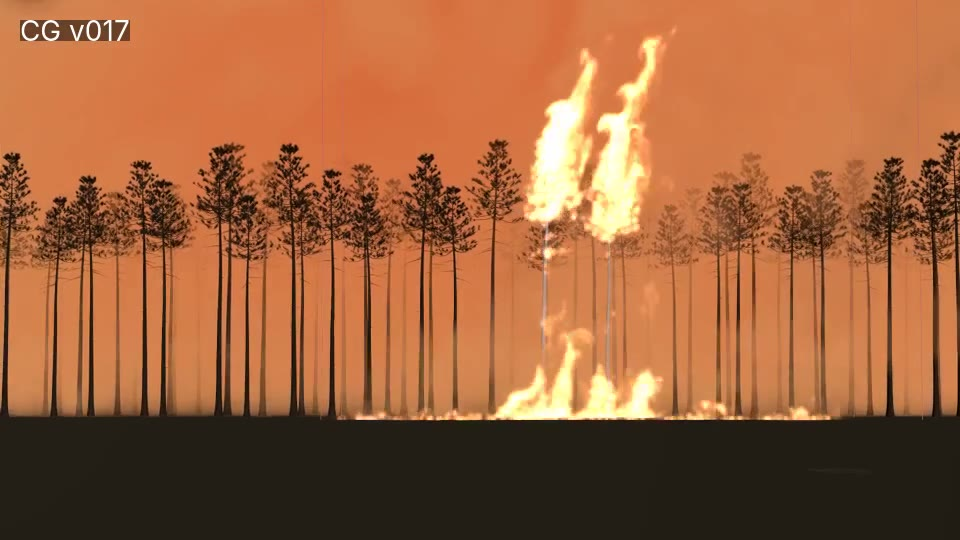
Summary
A ground-level shot of a south Georgia pine stand burning, matched to CBS Mornings news footage of the spring 2026 fires.
Two detailed hero pines catch fire from the ground up and torch into the crown while the wind pushes the flames and bends
the trees. A low ground fire burns around their base, a forest edge fills the frame behind them, and a layer of smoke
hangs over the whole scene. The camera, wind and timing are all matched to the reference clip.
The project started as an aerial shot with Copernicus Pyro (Entry 1). After feedback I switched to DOP pyro, so the fire
can interact with the real tree geometry, and to a closer shot built around two hero trees (Entry 2). The latest round
added tree variants, split the fire into separate pyro DOPs and matched the layout, camera,
embers and ground fire to the clip (Entry 3).
A fire front that decides where the fire is on every frame
Ground fire line (COP Pyro)
Torching crowns (COP Pyro)
Smoke column
Embers (POPs), stretch goal
Today I focused on 1 to 4.
Which pyro to use?
Houdini 22 has two options: the regular Sparse Pyro solver in DOPs, and the newer COP Pyro that runs on the GPU inside Copernicus.
I went with COP Pyro because it sims fast enough to scrub almost in real time on my RTX 5080, which makes look development much
quicker, and it is something we did not cover in class, so it is a good chance to learn it. The trade-off is that COP Pyro is less
flexible than the DOP solver (fewer ways to add custom microsolvers), so I am keeping Sparse Pyro as a backup if I hit a wall.
Scale
Everything is built at real-world scale in metres. The forest is 300 × 300 m and the trees are 18 to 26 m tall. A small voxel size
over an area that big would be far too heavy, so the sim runs at a Voxel Size of 0.5 for now with sparse
activation, so only the voxels near the fire are simulated. I also set the block's Time Scale back to 1
(the stock fire setup uses 5 because it is built for a tiny candle-sized flame).
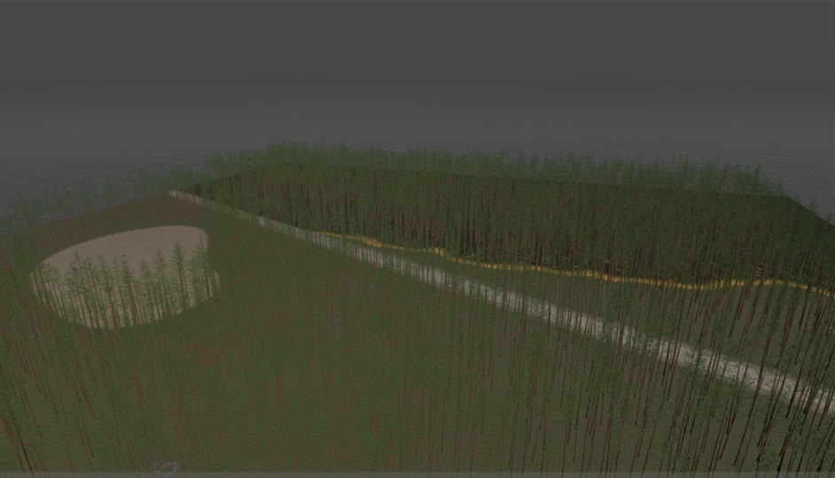
Procedural plantation from the shot camera, with the road, a clear-cut patch and the fire line.
Procedural forest
Terrain: a heightfield with Amplitude 2.5 and Element Size 120. South Georgia is very flat, so the relief is under a metre.
Pine generator: one VEX wrangle builds the trunk (with a root flare and a few dead stubs), 9 layers of branches at the top, and needle clumps on the outer part of each branch. It outputs 4 tree variants, about 4,300 polygons each.
Plantation: trees are placed in rows (4.5 m between rows, 3 m between trees), with 30% randomly missing, a sand road cut through the middle, and clear-cut patches on one side. That gives about 4,000 trees, copied as packed instances.
Everything is driven from one CTRL node, so I can change the layout without touching the network.
Fire front
Before simulating anything I needed to control where the fire is on every frame. I made an animated "fire front" attribute on a
1 m ground grid. It moves toward the camera at 2 m/s, and noise breaks the line into fingers instead of a straight edge.
Each point gets flame, char, smolder and ember values based on how long ago the
fire passed it. Points past the road do not burn, except a few spot fires that jump across about 2.5 seconds in.
About 12% of trees are flagged to torch, and their crown fire ramps up and dies down over 4 seconds once the front reaches them.
Sourcing COP Pyro
I started from SideFX's built-in Pyro Configure Fire setup and removed its test tube source. The burning ground points and
the torching crowns are rasterized in SOPs into density, temperature, flame and v
volumes (Volume Rasterize Attributes, 0.5 m voxels). In Copernicus, a SOP Import and a Geometry to Layer node turn them into VDBs that
plug straight into the Pyro Block Begin inputs. On the Pyro Block End I turned on flame sourcing, disturbance, turbulence and a
2.5 m/s wind toward the camera, and lowered density dissipation to 0.05 so the smoke hangs around.
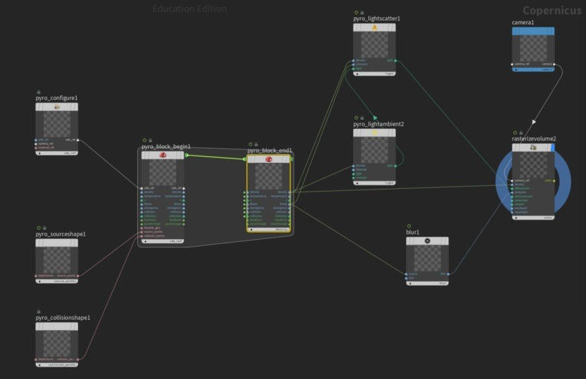
The Copernicus pyro network I started from.
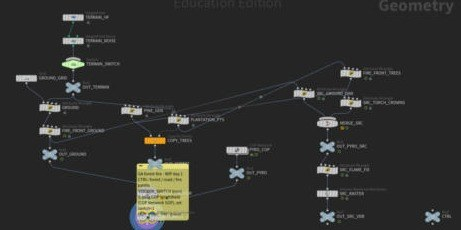
The SOP network: terrain, trees, fire front and pyro sources.
Iterations
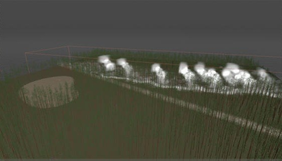
Iteration 1, frame 24: first smoke coming off the fire line.
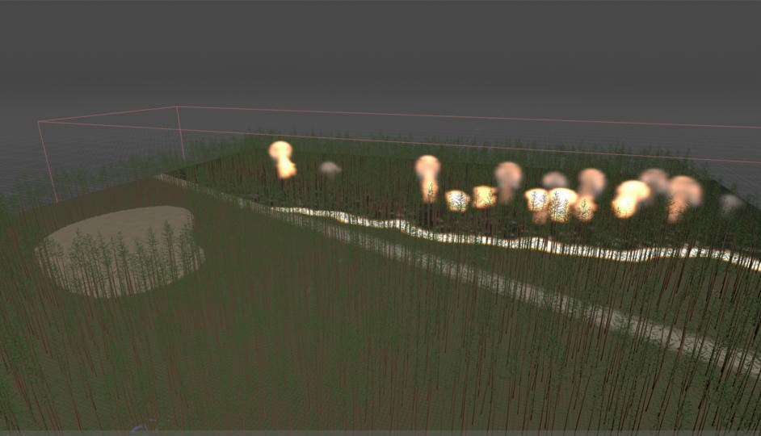
Iteration 1, frame 72: flames along the line and a few trees torching.
The first sim works, but it reads as a row of separate puffs, like small mushroom clouds, instead of one fire line.
Each source point makes its own blob, and the flame band is too thin to connect them.
Problems
Puffy fire: covered above. The fix is a wider flame band and more turbulence.
To Do
Widen the flame band from 6 m to about 14 m so the fire line connects.
Raise turbulence and disturbance to break up the round plumes.
Lower density dissipation further so a proper smoke column builds.
Drop the voxel size to 0.25 m once the look is right.
Embers with POPs, driven by the sim velocity.
Burnt bark shader for the trees, then lighting and an EXR render.
← Back to Blog
Georgia Wildfire · Entry 2 · Oct 29, 2026
Entry 2 Progress Blog
Changes From Previous Feedback
Feedback
Switch from COP Pyro to DOP Pyro, because COP Pyro can't interact with the trees and they would never look like they are really burning.
Start with two highly detailed trees instead of the aerial shot, which is too ambitious.
Focus on the lower part of the shot where the pyro is, and on an overall smoke layer.
The bottom fire is too wide compared to the reference. Think about the overall smoke that clouds the scene.
Add another layer of smoke on the left.
Make the smoke colour closer to the reference, which is really the lighting from the fire.
Focus on the shape of the flames.
Copy trees on a line with point jitter to start dressing the scene.
Changes made
COP Pyro to DOP Pyro: rebuilt the fire with the Pyro Solver (sparse DOP pyro), so the flames now wrap around the trunks and branches.
Two hero trees: replaced the aerial forest with two detailed pines, and matched the camera, wind and timing to one reference clip.
Lower pyro: added a ground fire around the base of the trees, then narrowed it to match the width in the reference.
Overall smoke: added a separate smoke sim that covers the whole sky, plus a second smoke source on the left.
Smoke colour: changed the smoke from grey to a fire-lit orange with warm shadows.
Flame shape: broke the big round flames into thinner tongues that split and flicker.
Trees on a line: copied a tree onto three rows of jittered points to make a forest edge.
Reference
Reference: CBS Mornings news footage of the Georgia fires, 6.7 seconds at 29.97 fps.
What I want to match from this clip:
Tall, bare pine trunks with the crowns burning at the top.
Flames that lean with the wind and change shape all the time.
A low camera from far away, with the ground line about two thirds of the way down the frame.
Orange smoke over the whole sky, lit by the fire underneath.
Where it stands now: reference on the left, viewport flipbook on the right.
Process
The shot is built from four layers that are put together in one scene:
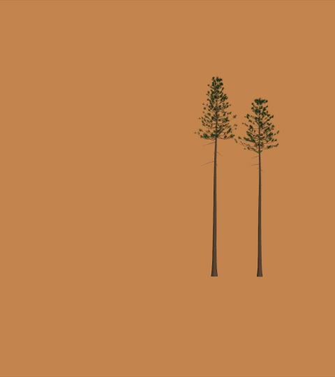
1. The two hero trees, moving with the wind.
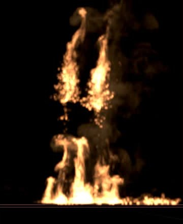
2. The main fire sim: crowns, trunks and ground fire.
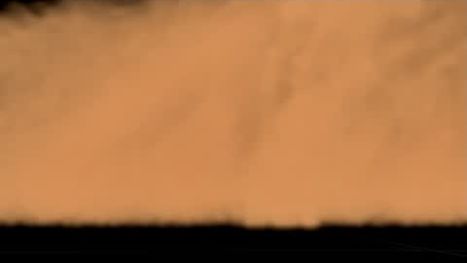
3. The smoke layer that covers the sky.
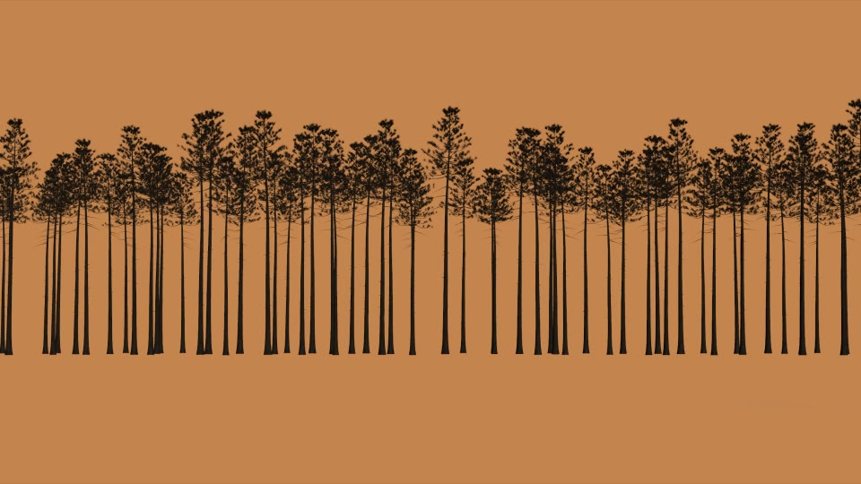
4. The forest edge made from copied trees.
1. The two hero trees
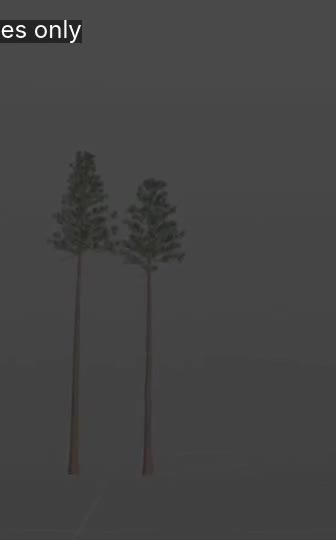
The two hero pines.
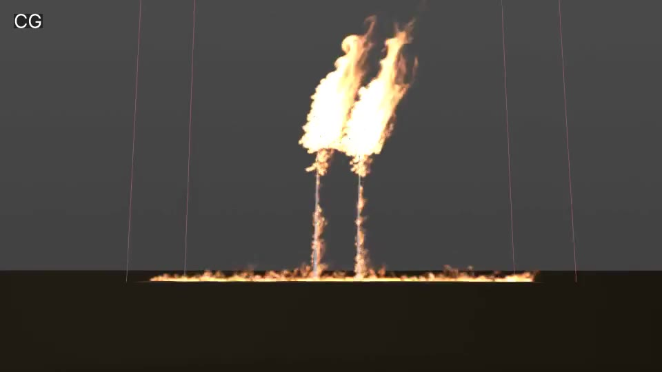
First DOP sim: the crowns burn, but the flames go straight up.
Both pines are built in an Attribute Wrangle (VEX): trunk, branches, needle clumps and a few dead twigs.
Every polygon gets a kind attribute (trunk, branch, needles or dead twig), so each part can burn differently.
All the main settings (tree positions, burn times, wind) live on one CTRL Null node, so I can change things in one place.
2. Making the trees burn
A primitive wrangle (BURN_TREES) works out when each part of the tree catches fire: first the ground fire reaches the tree, then the flames climb the trunk, then the whole crown catches at once.
Each part gets a flame, char and ember value over time. Needles burn for about 12 s, branches for 14 s and the trunk for 16 s.
Burnt needles are deleted, so the crown thins out as it burns, and burnt wood turns black.
A second wrangle (FIRE_SOURCES) scatters points on the burning parts with density, temperature, flame and v (velocity).
Volume Rasterize Attributes turns those points into volumes, which feed the Pyro Solver.
The trunks and branches are turned into a collision volume, so the fire flows around the wood instead of through it.
3. Matching the wind
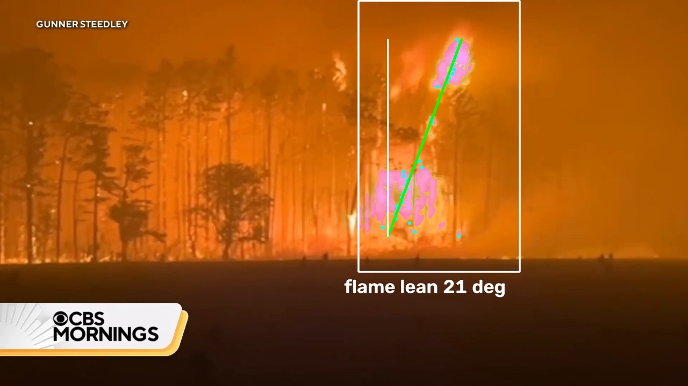
Measuring the reference: the script finds the bright flame pixels (pink), takes the centre of each row (dots) and fits a line through them (green). The angle of that line is the flame lean for that frame.
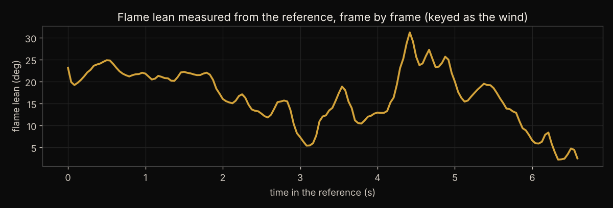
The lean for every frame of the reference. This curve was keyed onto the wind_speed channel, so the wind gusts and calms down at the same moments as the clip.
Measuring the reference: I wrote a small Python script that finds the bright flame pixels in each frame of the reference and measures how far the flame leans sideways from bottom to top. That gives one lean value per frame.
Wind curve in Houdini: I turned the lean values into a wind speed and keyed them onto a wind_speed channel on the CTRL node, one key per frame. That curve is the wind for the whole shot.
Pyro Solver wind: the Wind Strength parameter on the Pyro Solver reads that curve with the expression chf("../CTRL/wind_speed", $F + 4) * 4.0.
$F + 4 reads the wind 4 frames early, because a fire takes a moment to react to a gust.
* 4.0 scales it up so the lean in the sim matches the reference.
Source velocity: the fire source points also get a sideways velocity from wind_speed, so the flames lean right from where they start, not only higher up.
Buoyancy: I lowered Buoyancy Lift to 0.7 so the wind can push the flames over instead of them shooting straight up.
Checking it: I measured the flame lean in my flipbook the same way and compared it to the reference frame by frame. The two curves line up closely.
The same wind_speed curve also drives the tree motion, the smoke layer and the drift of the ground fire, so everything moves with one wind.
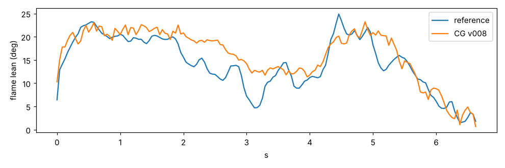
Checking it: flame lean in the reference (blue) and in my sim (orange), measured the same way. The two curves rise and fall together.
4. Moving the trees with the wind
My first version just made the trees shake randomly, which looked wrong.
I rebuilt it in a point wrangle (TREE_SWAY) that reads the same wind_speed channel.
Lean: the trees lean further when the wind is stronger (lean grows with wind speed squared).
Gusts: a noise pattern moves through the scene at 3 m/s in the wind direction, so gusts roll from one tree to the next instead of hitting both at once.
Bend: the bend is multiplied by height squared, so the base stays planted and the top moves the most.
Detail: branches get an extra push from local gusts, and the needles get a tiny rustle.
The lean, sway and flutter amounts are sliders on the CTRL node.
5. Ground fire
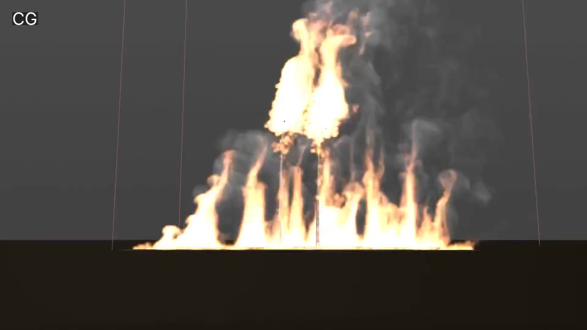
First pass: stronger ground fire, but far too wide.
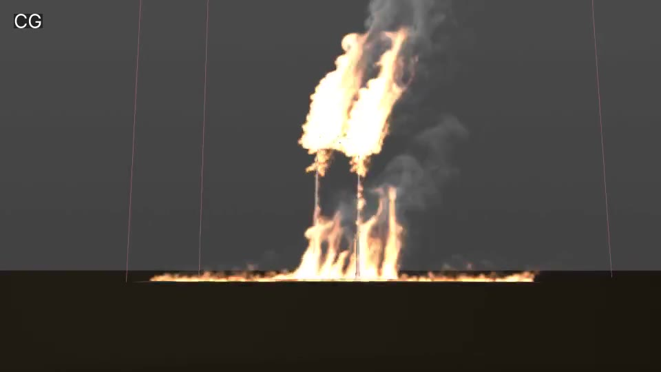
After the feedback: kept to the area around the two trees.
A wrangle on a ground grid (GROUND_FIRE) adds a band of fire around the base of the trees.
Noise breaks the band into patches, and the noise drifts with the wind so the patches move.
The first pass was much too wide. I limited it to about 15 m across, around the two trees, to match the reference.
The ground fire runs hotter and lifts harder than the first version, so it stands up like the base fire in the clip.
6. Overall smoke, smoke on the left and smoke colour
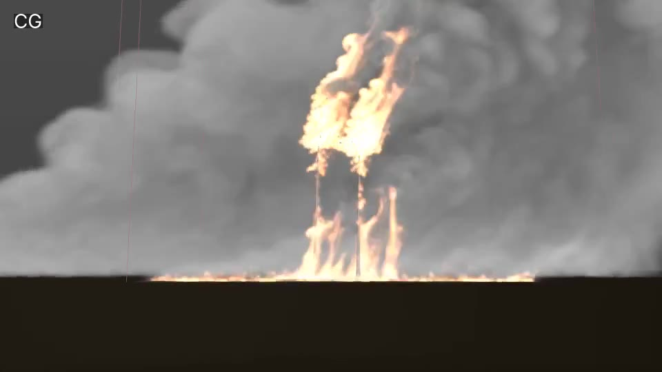
The first smoke layer, still grey, before the colour change.
The main fire sim only covers the two trees, so the haze over the whole scene is a second Pyro Solver with bigger voxels (0.3 m), which keeps it light.
It starts at frame -95, so the smoke is already in the air when the shot begins.
It has three sources, merged together:
a wide band of soft smoke behind the trees,
a second source on the left that starts off screen and higher up, which the wind carries into the frame,
some of the smoke coming off the hero fire.
Dissipation is very low, so the smoke builds into a haze instead of separate puffs.
Colour: on both Pyro Solvers I set the smoke colour to a fire-lit orange and the shadow colour to a warm brown, instead of grey and black.
The smoke in the reference is really grey smoke lit by the fire, so in the final render I want to light it with the fire instead.
7. Flame shape
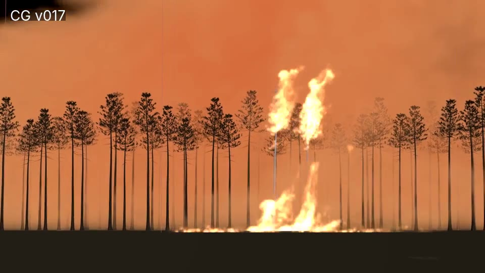
Flame shape after the changes.
The flames were big round blobs that kept the same shape all the time.
I added a wrangle (SOURCE_FLICKER) that runs moving noise through the fire sources, so the fire comes out in bursts instead of a steady stream.
On the Pyro Solver:
Flame Lifespan down to 0.7, so the tips break off.
Disturbance and Shredding block size up to 0.45, for bigger break-up shapes.
Turbulence swirl size up to 2.5, for larger rolling curls.
The flames now lick up in separate tongues and change shape every frame.
8. Trees on a line with point jitter
Blast keeps just one hero tree, and a wrangle moves it to the origin.
A wrangle gives it a near-black colour, so it reads as a silhouette against the fire.
Another wrangle (TREE_LINE_PTS) makes three rows of points behind the hero trees, each row further back.
Each point is moved a little at random along the row and in depth (point jitter), so it doesn't look like a fence.
Each point gets a random size (pscale 0.85 to 1.15) and a random rotation (orient).
No points within 3.5 m of the hero trees.
Copy to Points puts the tree on every point as a packed copy, which keeps the viewport fast. That makes 98 trees.
9. Camera and layout
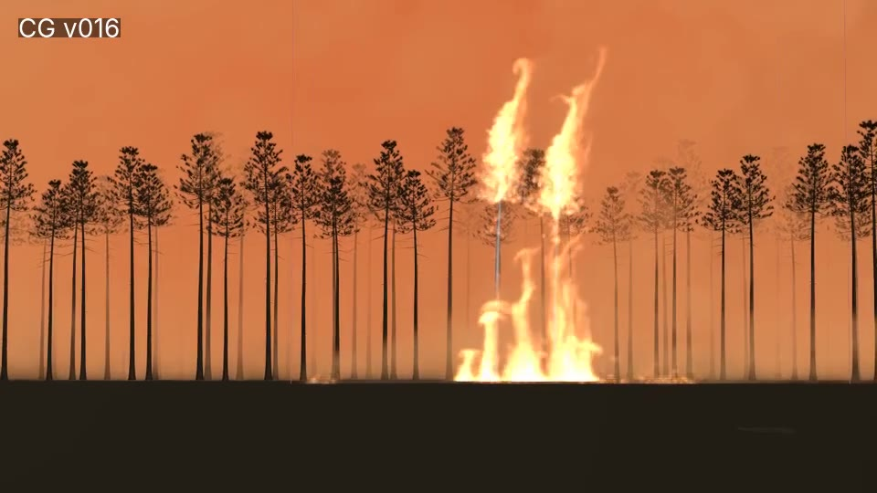
Camera matched: long lens, ground line about two thirds down, fire just right of centre.
The reference is filmed from far away with a long lens, which squashes the trees together.
I moved the camera about 170 m back at eye height (1.8 m) and set the focal length to 85 mm.
I kept the small tilt and pan I measured from the reference as keyframes on the camera.
The ground line now sits about two thirds of the way down, with the fire just right of centre, like the reference.
To Do
Fire along the background trees and a glow along the ground, like the reference.
Trees packed closer together, with a mix of shapes and some shorter, bushier trees.
Light the smoke and trees with the fire in the render.
Match the full length of the reference.
Render and composite in Nuke.
← Back to Blog
Georgia Wildfire · Entry 3 · Nov 3, 2026
Entry 3 Progress Blog
Changes From Previous Feedback
Feedback
Make the smoke a bit denser, matching the reference.
Lay out the scene and keep the camera angle like the reference.
Add embers on a few trees, like in the reference, created in pyro.
Use separate pyro DOPs: one for the trees, one for the floor fire and one for the embers.
No camera movement: keep it still, with only a slight push-in zoom.
Put a Test Tommy next to the trees to check the scale.
Apply a texture to the trees, like a grey texture, because right now they read as black.
Changes made
Denser smoke: smoke amount per source point on the smoke layer.
Background haze: 0.3 → 0.75
Smoke bank on the left: 0.4 → 0.8
Smoke fed from the fire: 0.3 → 0.45
New smoke bank on the right: 1.0
Smoke colour: (0.85, 0.42, 0.16) → (0.78, 0.33, 0.07), a deeper orange like the clip
Layout: matched to the reference.
Tree line now ends just right of the main fire (about 75% across), with a smoke bank on the right.
Two round dark trees in front, at 18% and 33% across the frame, where they are in the clip.
Background trees: 98 → 71, with a slight random lean (±4°) on each trunk.
Sky colour sampled from the reference; ground changed from black to dark brown (0.10, 0.045, 0.015).
Ground fire: now burns along the whole base of the tree line.
Before: one fire line sweeping away from the camera from one side, on a 40 × 30 m grid.
Now: a patchy fire line along the full tree line on a 90 × 30 m grid, creeping toward the camera at 0.12 m/s.
New fire wall between the trunks around the main fire (46–71% across the frame), set behind the front trunks so they stay dark.
Floor-fire sim box: max size 10 m → 120 × 40 × 40 m.
Embers in pyro: only on the trees where they are in the clip.
Before: no embers.
Now: glowing spots on trunks in 4 bands across the frame. Most are next to the main fire (4–6 spots per trunk); elsewhere 1–3; the right side has none.
Each spot has thin fire sources climbing the bark, simulated in their own Pyro Solver.
Separate pyro DOPs:
Before: 1 Pyro Solver for all the fire.
Now: PYRO_TREES_DOP, PYRO_GROUND_DOP and PYRO_EMBERS_DOP, plus the SMOKE_LAYER_DOP for the haze.
Still camera with push-in:
Before: keyed tilt and pan moves.
Now: camera locked; focal length 85 mm → 91 mm from frame 1 to 160 (about a 7% push-in).
Test Tommy for scale: 1.78 m Tommy at the base of the trees; the pines are 22–25 m, about 13 times taller.
Grey texture:
Before: near-black trees (colour 0.035).
Now: grey bark texture on trunks and branches, darker grey-green crowns (0.14); trees still char darker as they burn.
Reference
Reference: CBS Mornings news footage of the Georgia fires.
Progress
Reference on the left, viewport flipbook on the right (160 frames at 24 fps).
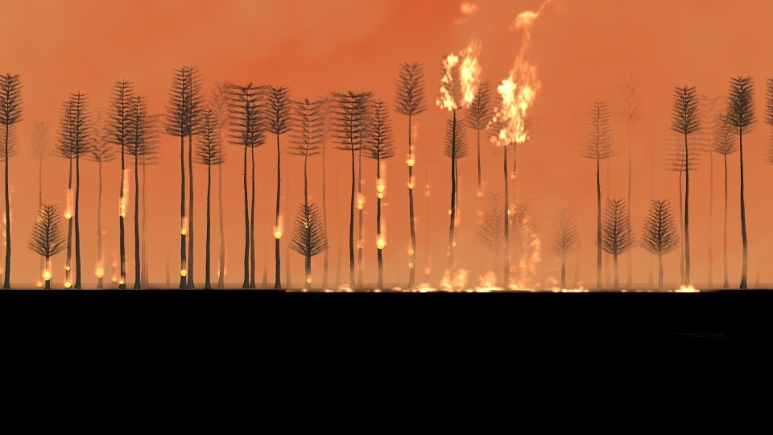
Before: one tree shape, black trees, ground fire on one side only.
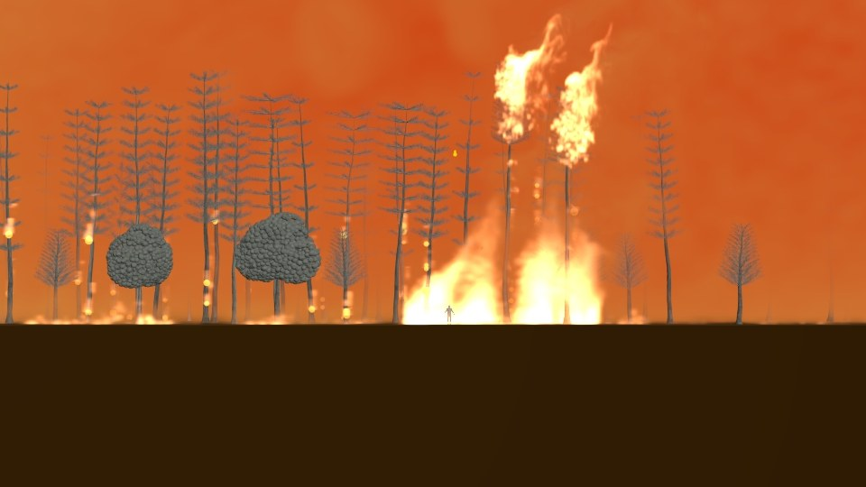
Now: varied grey trees, fire wall between the trunks, ground fire along the tree line.
Test Tommy Scale Check
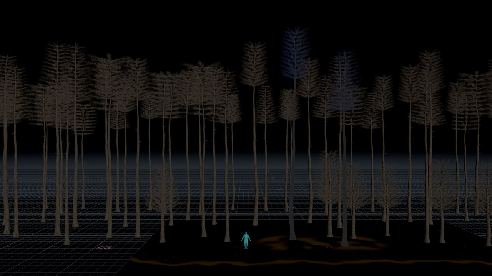
Close check camera, 45 m away: Tommy (cyan, 1.78 m) next to the tree bases.
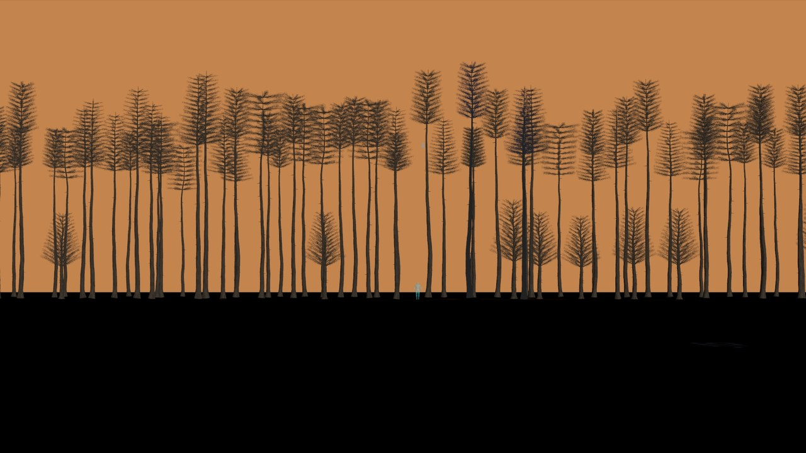
Through the shot camera, 170 m away: Tommy is about 20 px tall, which is why the trees read so large.
Process
1. Layout and camera matched to the reference
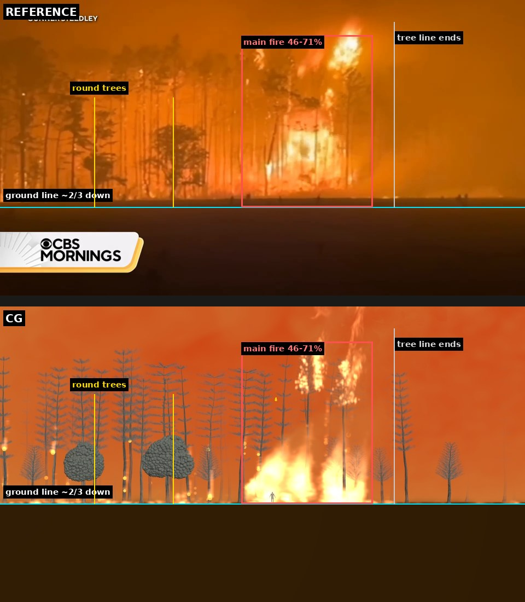
Same guides on both: ground line about 2/3 down, round trees at 18% and 33%, main fire at 46–71%, tree line ending at about 75%.
Camera about 170 m back, 1.8 m high, with a long lens, like the clip.
Each tree's position is converted to how far across the frame it sits, so trees, fire and embers are placed where they are in the reference.
Trees right of about 75% removed (only about 12% kept, faint in the smoke).
Two round trees placed at 18% and 33% across, at the front.
Each background trunk leans randomly by up to ±4°.
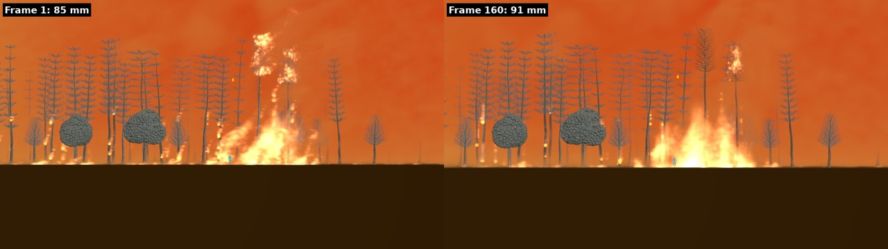
Frame 1 (85 mm) next to frame 160 (91 mm): the camera stays still, only the lens pushes in.
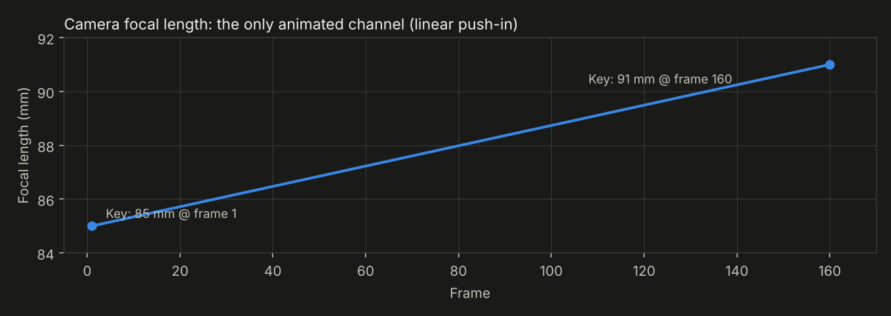
The focal length is the only animated channel: two keys, linear.
Deleted every translate and rotate key on the camera.
Focal length keys: 85 mm at frame 1, 91 mm at frame 160, linear (about a 7% push-in).
2. Denser smoke
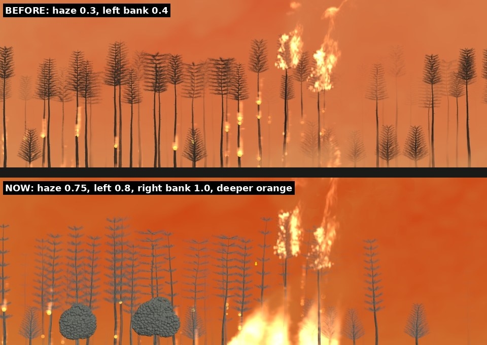
Top of frame before (thin, pink haze) and now (denser, deeper orange).
Smoke amount per source point on the smoke layer:
Background haze 0.3 → 0.75
Left bank 0.4 → 0.8
Smoke fed from the fire 0.3 → 0.45
New right bank 1.0, covering the right side like the clip
One matte material that uses the geometry colour, so the viewport flipbook shows it reliably.
5. Separate pyro DOPs
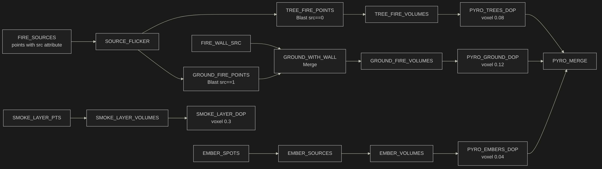
Node flow: tree fire, floor fire and embers each go into their own Pyro Solver, then merge for display.
The fire source points get a src attribute: 0 for tree fire, 1 for floor fire.
Two Blast nodes split them: TREE_FIRE_POINTS and GROUND_FIRE_POINTS.
Each set goes through Volume Rasterize Attributes into its own Pyro Solver:
PYRO_TREES_DOP: voxel 0.08 m, starts at frame -47, collides with the trunks.
PYRO_GROUND_DOP: voxel 0.08 → 0.12 m for the wider area, flame lifespan 0.7 → 0.6, buoyancy 0.85 → 0.8, max size 10 m → 120 × 40 × 40 m.
PYRO_EMBERS_DOP: voxel 0.04 m for small tongues, starts at frame -60, flame lifespan 0.6, buoyancy 1.2, dissipation 0.2, wind × 1.2.
SMOKE_LAYER_DOP: voxel 0.3 m, starts at frame -95.
A Merge (PYRO_MERGE) puts the three fires back together for display.
All of them read the same wind_speed channel, so they lean together.
6. Ground fire and fire wall
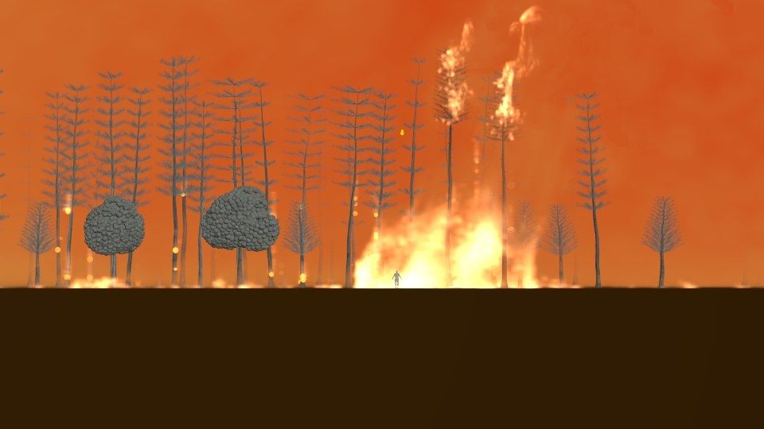
Fire line along the base of the trees and the fire wall around the main fire.
Ground grid widened from 40 m to 90 m, so it covers both frame edges.
Fire line: a ragged strip about 4 m deep at the front of the tree line, creeping toward the camera at 0.12 m/s; noise breaks it into patches that drift with the wind.
Right side burns at 35% strength, because the clip is mostly smoke there.
Fire wall: extra source points between the trunks around the main fire, up to about 8 m high, brightest near the ground.
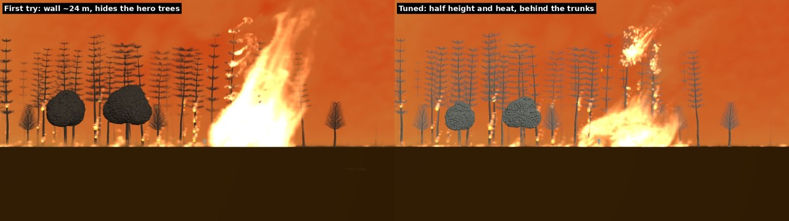
First try was too strong (about 24 m tall, hiding the hero trees); tuned to half the height and heat, behind the front trunks.
Floor fire flickers patch by patch, separately from the hero crowns.
7. Embers matched to the reference
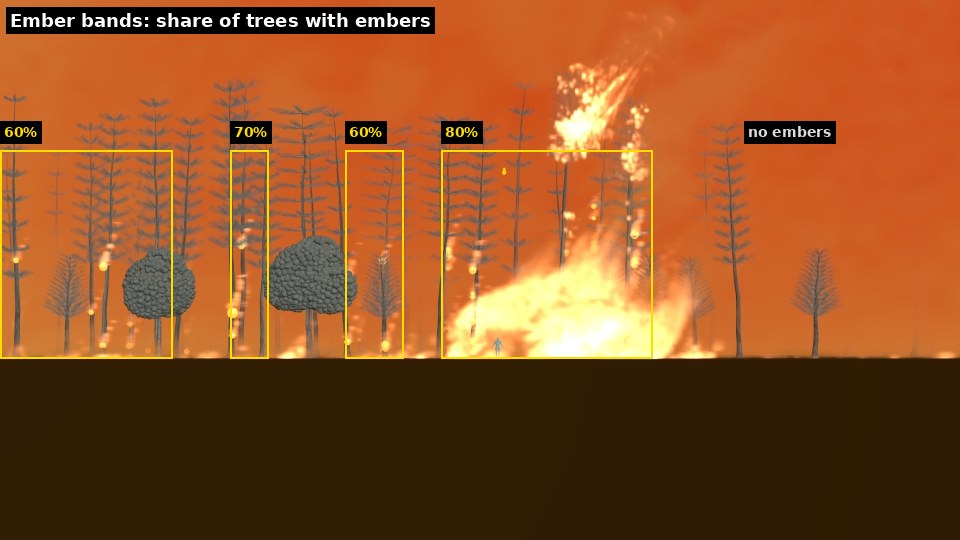
The bands where embers appear, with the share of trees that get them.
Embers only appear in the bands where they are in the clip:
far left (0–18%): 60% of trees
left of centre (24–28%): 70%
middle (36–42%): 60%
around the main fire (46–68%): 80%, with 4–6 spots per trunk
right side: none
Spots pulse slowly, and each one sources thin flames that lick up the bark in PYRO_EMBERS_DOP.
8. Fixes along the way
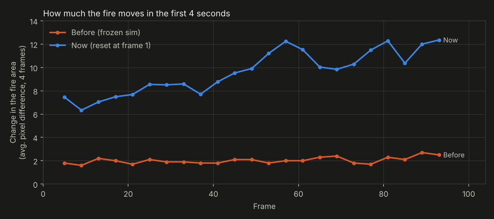
Before the fix the fire barely changed for the first 4 seconds; now it moves from frame 1.
Fire frozen for the first 5 s: the sims were reset while the timeline sat on a late frame, so the cache dropped the early frames. Now every sim is reset at frame 1, and the cache limit went from 5000 to 12000 MB.
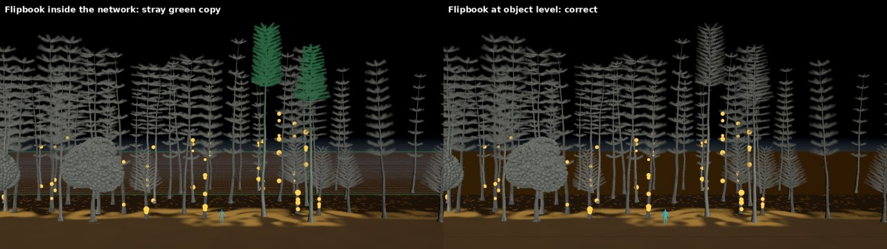
Left: stray green copy of the hero trees. Right: flipbook from object level.
Green crowns in the flipbook: the viewport drew a stray copy of the hero trees when flipbooking from inside the geometry network. Flipbooks now run from object level.
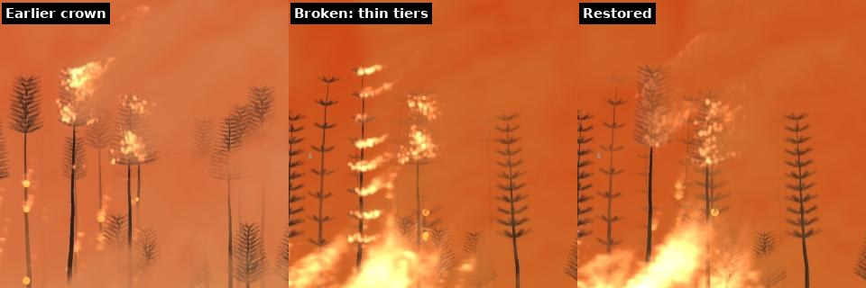
Hero crown: earlier version, broken by a shared setting, and restored.
Hero crowns: the left hero tree shared its shape with a background variant; it now has its own copy, so the background changes don't affect it.
To Do
Apply the feedback and suggestions from the next review.
Make the fire wall brighter and wider, closer to the white-hot core in the reference.
Make the round trees airier, with gaps in the crown.
Make the pine crowns more uneven and clumpy, like the clip.
Light the smoke and trees with the fire in a Karma render.
Render and composite in Nuke.
← Back to Blog
Georgia Wildfire · Entry 4 · Nov 5, 2026
Entry 4 Progress Blog
Changes From Previous Feedback
Feedback (Nov 4 review)
Bring back the earlier pine trees, built with nodes.
The fire on the trees is moving too fast; the earlier tree fire was better.
The embers are flickering and do not look right.
The smoke is good, but there is a red background; remove it.
The fire on the trees and on the ground should move like the reference, including the wind.
The flame looks like too much pyro; go back to the earlier flame and follow the reference.
Yellow dots on the trees, and the embers are not sitting on the trees.
In the centre of the reference, the ground fire is blown upward by the wind; match it frame by frame.
Feedback (Nov 5 review)
Desaturate the green of the trees and reduce how much they react to the light.
The blown-out parts of the midground pyro are still much larger than in the reference.
The flames on the left and right of the main fire are too tall.
The smoke looks greenish.
The embers still flicker; they should move like flames.
Changes made
Earlier pine trees, rebuilt with SOP nodes:
Before: 4 tree variants (pines, bushy pines, round trees), each trunk leaning ±4°.
Now: the earlier pine on every tree, built only from nodes in ProcTrees.
Reference: CBS Mornings news footage of the Georgia fires.
Progress
Reference on the left, viewport flipbook on the right (160 frames at 24 fps).
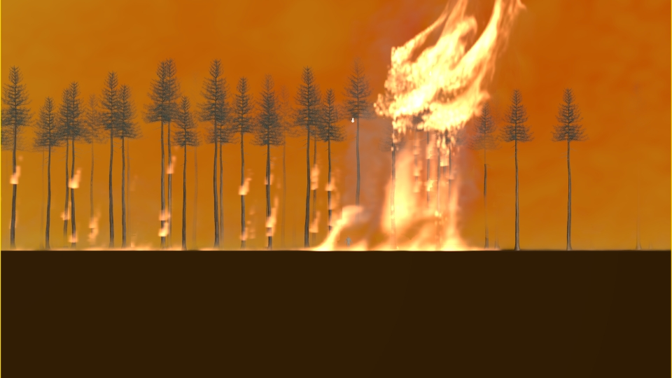
Flipbook frame 30: pines along the tree line, ground fire starting.
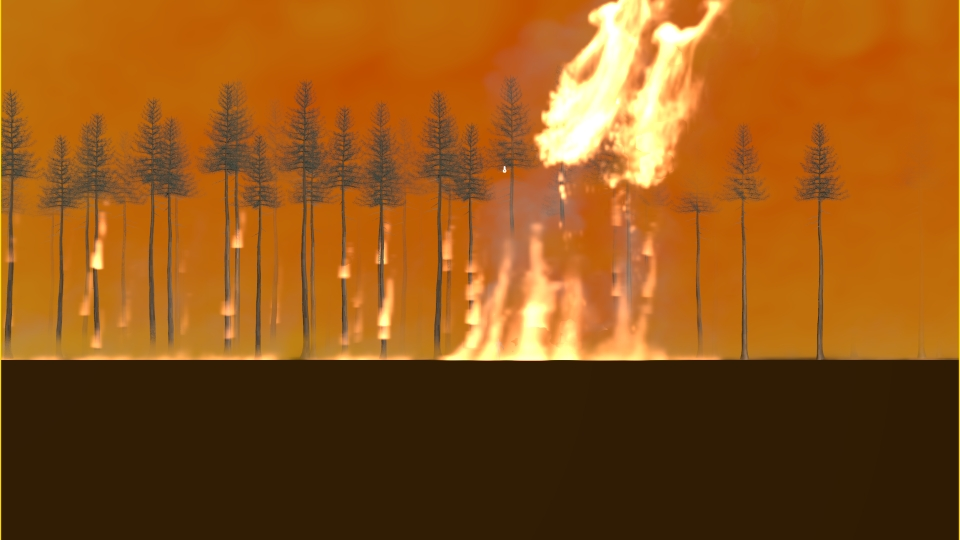
Frame 80: main fire rising between the trunks, embers on the bark.
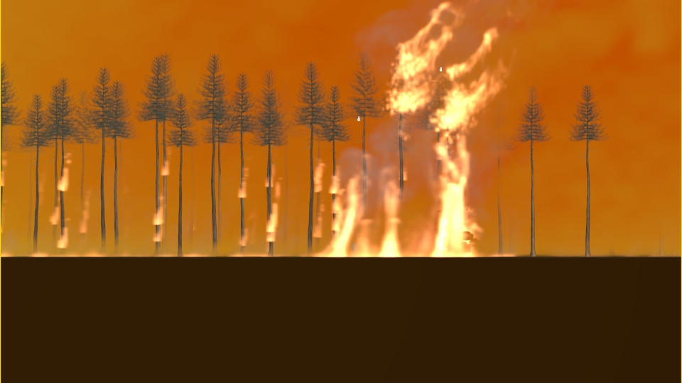
Frame 130: fire leaning with the wind gust.
Process
1. Pine trees built with nodes
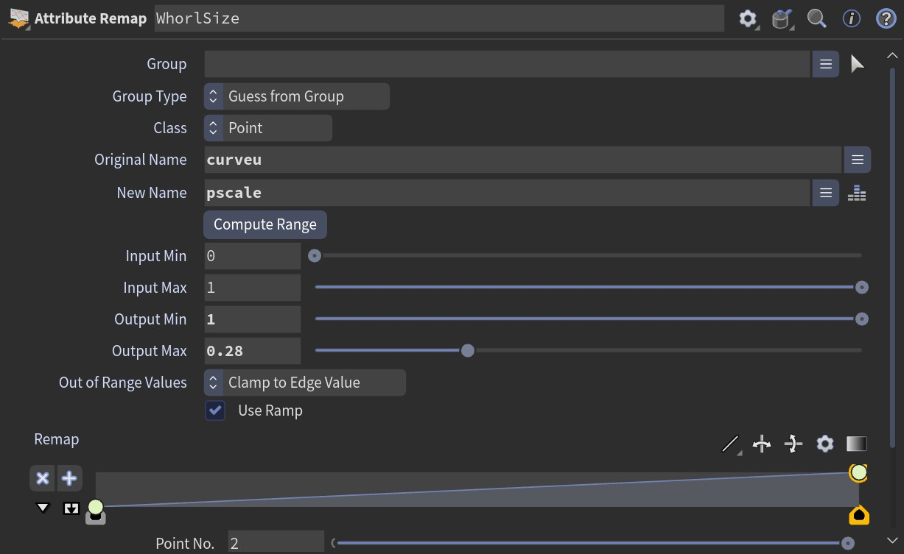
Shows WhorlSize: branch length goes from 1.0 at the bottom to 0.28 at the top.
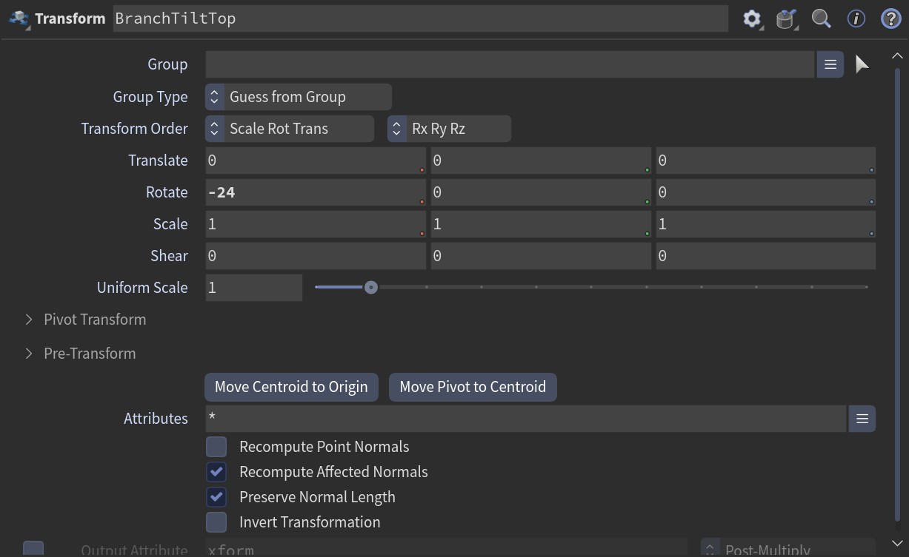
Shows BranchTiltTop: Rotate X −24, which tilts the top band of branches up.
Each crown band has its own whorls, tilt and blast on the trunk height, then they merge into one crown.
Bark uses the bark texture, tinted to the bark colour (0.17, 0.11, 0.07).
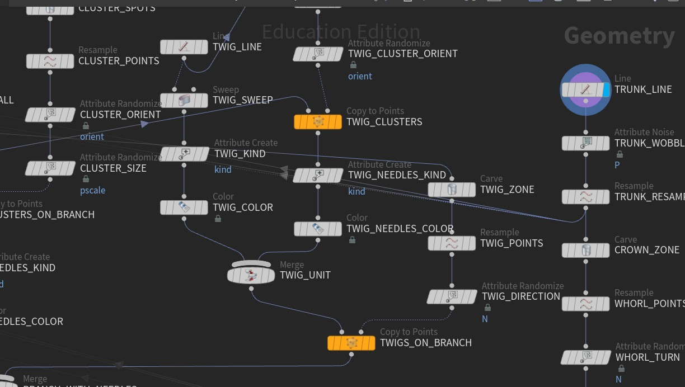
Shows the twig chain: line, sweep, needle clusters, then copied along each branch.
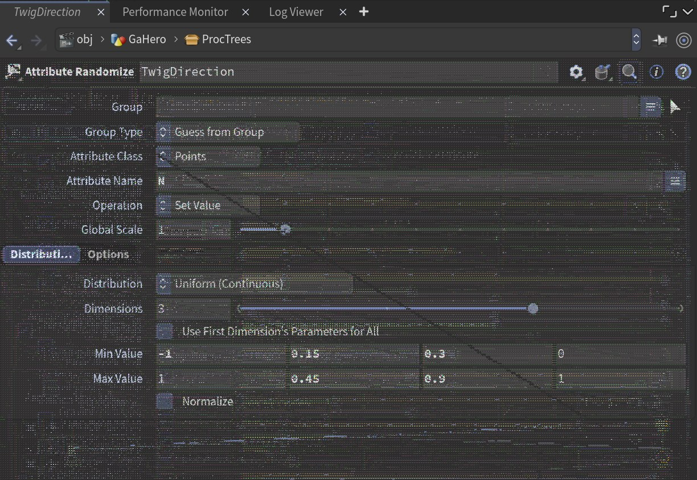
Shows TwigDirection: random twig directions between (−1, 0.15, 0.3) and (1, 0.45, 0.9).
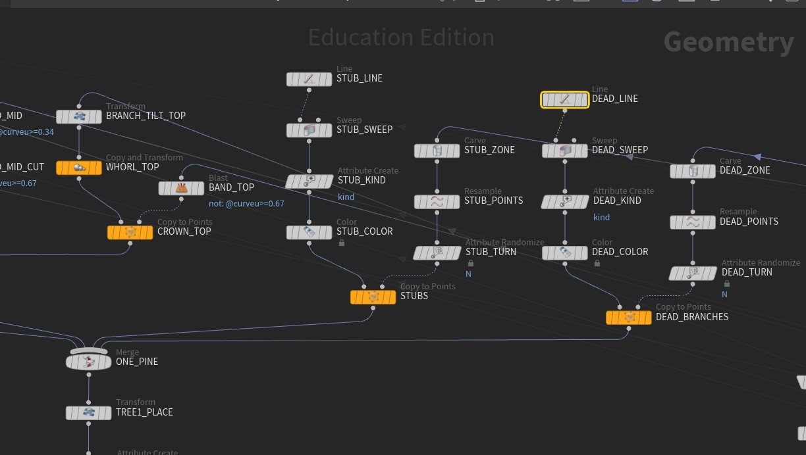
Shows the dead branch chain feeding into OnePine.
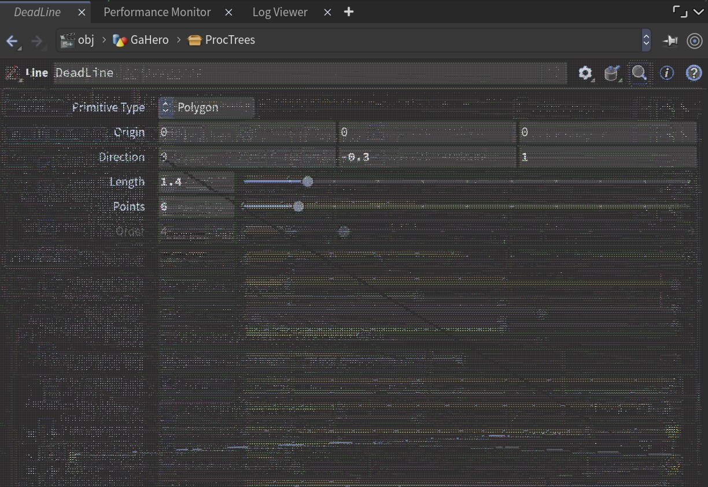
Shows DeadLine: length 1.4, pointing slightly down (0, −0.3, 1).
2. Tree fire back to the earlier version
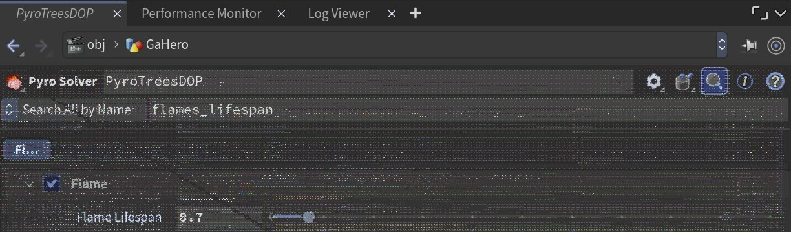
Shows PyroTreesDOP Flame Lifespan 0.7, the earlier value.Shows Buoyancy Scale 0.85 and Wind Speed, which follows the Fire Wind channel × 4.
Time Scale back to 1, so the flame moves at the earlier speed.
Tree sources flicker with the earlier timing.
3. Wind and surge from the reference
Shows the CTRL node at frame 80: Fire Wind 2.316 m/s and Ground Surge 0.049, both keyed from the reference.
The wind was measured from how the flames drift in the clip, frame by frame.
Ground surge rises when the reference centre fire blows up, and drives the fire wall between the trunks.
Flame lean: reference about 28°, CG about 35°.
4. Red background removed
Shows CamHero with the Background Image field now empty.
5. Ground fire
Shows PyroGroundDOP Buoyancy Scale 1.3 and Wind Speed from Fire Wind × 1.2.Shows the setup tab: Max Substeps 2, which removed the stripes in the floor fire.
Shows the floor fire Flame Lifespan of 0.6.
6. Blown-out pyro and smoke colour
Shows the ground fire look: Smoke Color (0.42, 0.33, 0.27), Shadow Color (0.1, 0.06, 0.04), Intensity Scale 9.Shows the tree fire Intensity Scale of 15.
Lower intensity keeps the flame orange and leaves white only in the hottest core.
The old smoke colour had almost no blue, so thick smoke in shadow read olive green; neutral grey fixes it.
7. Embers
Shows the ember chain: trunk copies, ember spots on the bark, ember sources, then PyroEmbersDOP.
Shows Buoyancy Scale 0.8, Wind from Fire Wind × 0.5, Disturbance 0.3 with block size 0.15.Shows Voxel Size 0.05 and Max Substeps 2 for the ember sim.
Shows the ember Flame Lifespan of 0.6.
Before, the ember flames were about 0.3 m and lived 0.3 s, only 2–3 pixels on screen, so they blinked on and off.
Now they are small continuous flames licking up the bark and leaning with the wind.
8. Tree colour and shader
Shows NeedlesColor: the desaturated needle green (0.1, 0.12, 0.093).Shows TreeMatte: Base Color 0.7, Use Point Color on, Roughness 1.
9. Node network
Shows the fire network: tree, ground and ember sources going into their own Pyro Solvers, then merged.
To Do
Apply the feedback and suggestions from the next review.
Barghavan Rajeshkanna
FX Artist
FX Artist specializing in pyro simulations and rigid body dynamics, creating cinematic visual effects through procedural techniques and physically driven workflows.
Education
Present
Savannah College of Art and Design
MFA Visual Effects
2023
IMAGE Creative Education, Alwarpet
Diploma in Creative Education
2021–2024
SRM University, Ramapuram
B.Sc Visual Communication
2021
Vana Vani Matric Hr. Sec. School, IIT Campus Adyar